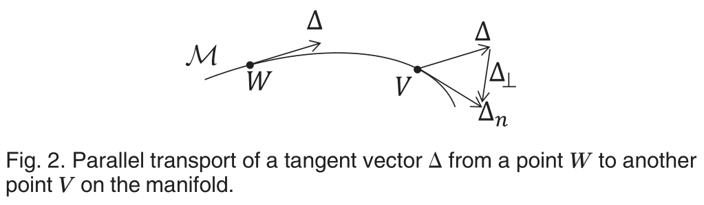
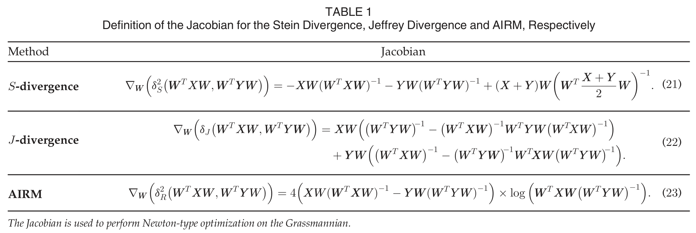
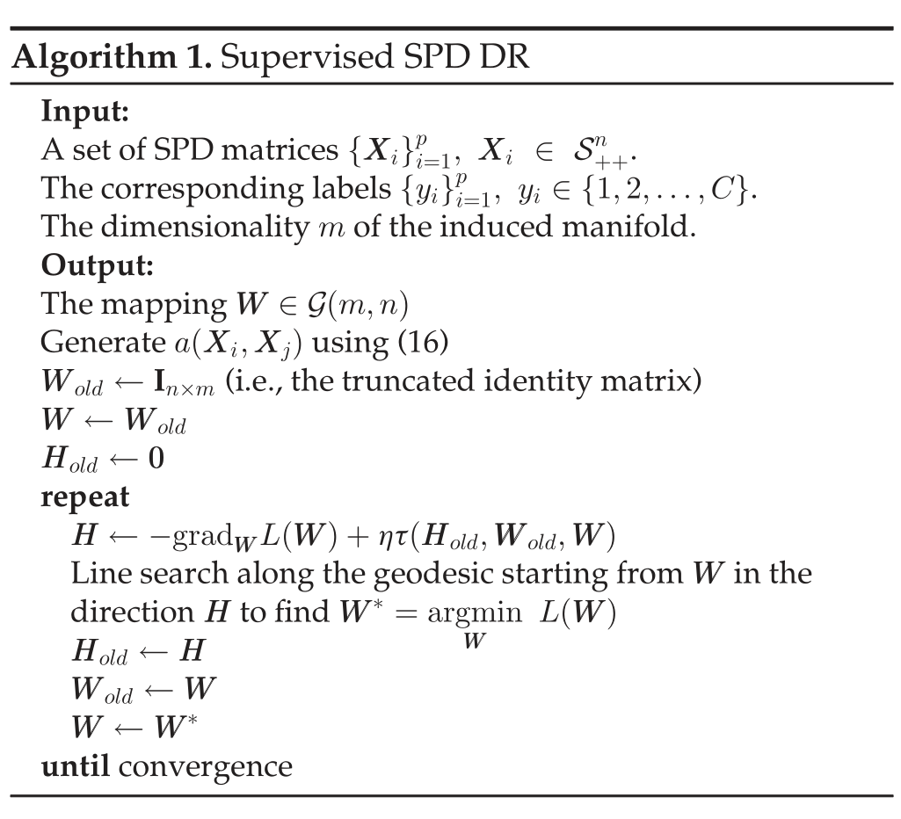
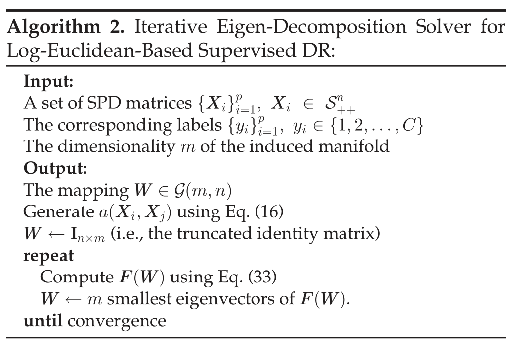

写在前面
本文介绍一篇流形降维领域非常经典的文章，利用SPD流形的几何关系分别构建监督和无监督两种范式的降维学习。
基础知识
仿射不变黎曼度量
SPD流形S++n研究最多的度量还是仿射不变黎曼度量。对于点P∈S++n和切向量v,w∈TPS++n，
⟨v,w⟩P≜⟨P−1/2vP−1/2,P−1/2wP−1/2⟩=tr(P−1vP−1w)
该度量诱导出测地线距离δR(X,Y)=∥log(X−1/2YX−1/2)∥F具有仿射变换不变性，即δR(X,Y)=δR(AXAT,AYAT)。
Bregman散度
记ζ:S++n→R为严格凸且可微的函数，则Bregman矩阵散度为
dζ(X,Y)=ζ(X)−ζ(Y)−⟨∇ζ(Y),X−Y⟩,
Bregman散度具有非对称、非负和正定性质。下面将Bregman散度对称化。
选择ζ(X)=−logdet(X)，通过Jensen-Shannon 对称化得到Stein散度
δS2(X,Y)≜21dζ(X,2X+Y)+21dζ(Y,2X+Y)=logdet(2X+Y)−21logdet(XY)
选择ζ(X)=−lndet(X)，通过平均得到Jeffrey散度
δJ2(X,Y)≜21dζ(X,Y)+21dζ(Y,X)=21tr(X−1Y)−21logdet(X−1Y)+21tr(Y−1X)−21logdet(Y−1X)−n=21tr(X−1Y)+21tr(Y−1X)−n
Stein散度和Jeffrey散度同样具有仿射变换不变性
δS2(X,Y)δJ2(X,Y)=δS2(AXAT,AYAT).=δJ2(AXAT,AYAT).
此外，Stein散度、Jeffrey散度和AIRM度量得到的测地线距离具有倍数关系。
优化框架
一般都是提出优化问题后再设计求解算法，不过本文集成了监督学习和无监督学习，但都是使用梯度下降法，所以把优化前置了，后面在模型里直接放结果。该框架可表示为如下优化框架：
W∈Rn×mminf(W)s.t.WTW=Im
在仿射变换不变性质下，f(W)与由W张成的基选择无关，即对正交矩阵R∈O(m)，有f(W)=f(WR)，则该问题落在了Grassmann流形G(m,n)上，下面使用Grassmann优化技术中的黎曼共轭梯度法完成优化。
黎曼共轭梯度法
记∇W(f)为f(W)关于W的雅可比矩阵，G(m,n)上的梯度表示为
gradf(W)=(In−WWT)∇W(f)
黎曼共轭梯度法包含以下三个步骤：
- 计算当前的梯度gradf(W)
- 通过平行传输先前的搜索方向并将其与gradf(W)组合来确定搜索方向H。
- 在方向H上沿W的测地线进行直线搜索。
在停止前反复迭代这三步可得到局部极小点。
平行传输
上面有一步τ(H,W,V)表示从W到V的切向量的的并Δ行传输。
与欧式空间不同，在流形上不能通过简单的平移将切向量Δ从一点传递到另一点。在流形M上将Δ从W运输到V需要减去法向分量Δ⊥到的矢量为切向量。这种切向量的转移称为平行传输(parallel transporting)。

流形S++n降维
通过双线性映射实现高维流形S++n到低维流形S++m的嵌入，即对X∈S++n
fW(X)=WTXW∈S++m
监督降维
首先需要将标签信息编码至流形点的几何关系中，下面使用类内距离和类间距离定义一个仿射关系，利用双线性映射同时最小化类间距离且最大化类内距离，完成判别分析。
类内相似度gw:S++n×S++n→R+
gw(Xi,Xj)={1,0,ifXi∈Nw(Xj)orXj∈Nw(Xi)otherwise
Nw(Xi)是Xi与共享yi相同标签的νw个最近邻居的集合。
类间相似度gb:S++n×S++n→R+
gb(Xi,Xj)={1,0,ifXi∈Nb(Xj)orXj∈Nb(Xi)otherwise
Nb(Xi)是νb个包含Xi的最近邻居，并带有不同的标签。
仿射函数a(⋅,⋅)类似于最大间隔准则(Maximum Margin Criterion)
a(Xi,Xj)=gw(Xi,Xj)−gb(Xi,Xj)
目标函数
L(W)=i,j=1j=i∑pa(Xi,Xj)δ2(WTXiW,WTXjW)
其中δ可以选择δR、δS或δJ。
梯度计算

算法流程

无监督降维
无监督场景无法利用标签信息对样本的进行区分。下面使用最大化方差的准则来完成流形无监督降维，即
记所有样本点{Xi}i=1p关于度量δ的几何均值为M，通常选择Frechet 形式来计算
M∗≜argM∈S++nmini=1∑pδ2(Xi,M)
- AIRM度量，利用指数算子和对数算子计算黎曼(Karcher)均值
- Stein散度，通过迭代凸凹步骤(CCCP)计算均值
- Jeffrey散度，均值具有显式表达
最大化方差意味着所有投影点与均值投影点的距离最大化，即
L(W)=i=1∑pδ2(WTXiW,WTMW)
注意：WTMW并不是投影后的几何均值点，即
WT(argM∈S++nmini=1∑pδ2(Xi,M))W=argF∈S++mmini=1∑pδ2(WTXiW,F)
Log-Euclidean度量与监督降维
除了AIRM和两个Bregman散度，Log-Euclidean度量也是流形S++n上常用的度量
δlE(X,Y)=∥log(X)−log(Y)∥F
监督降维的度量δ改为Log-Euclidean度量，得到如下优化目标
L(W)=i,j=1∑pa(Xi,Xj)∥∥∥∥log(WTXiW)−log(WTXjW)∥∥∥∥F2
通过将log(WTXW)近似为WTlog(X)W，目标函数可改写为
L(W)=i,j=1∑pa(Xi,Xj)∥∥∥∥WTlog(Xi)W−WTlog(Xj)W∥∥∥∥F2=tr(WTF(W)W)
其中
F(W)=i,j=1∑pa(Xi,Xj)(log(Xi)−log(Xj))WWT×(log(Xi)−log(Xj))
则优化问题可改写为特征分解问题
Wmintr(WTF(W)W)s.t.WTW=Im.
采样二阶段迭代方式更新W和F(W)，算法步骤如下：

小结
后面还有一些东西就不细说了。作者M. Harandi、M. Salzmann和R. Hartley做了很多机器学习与几何的结合。
References